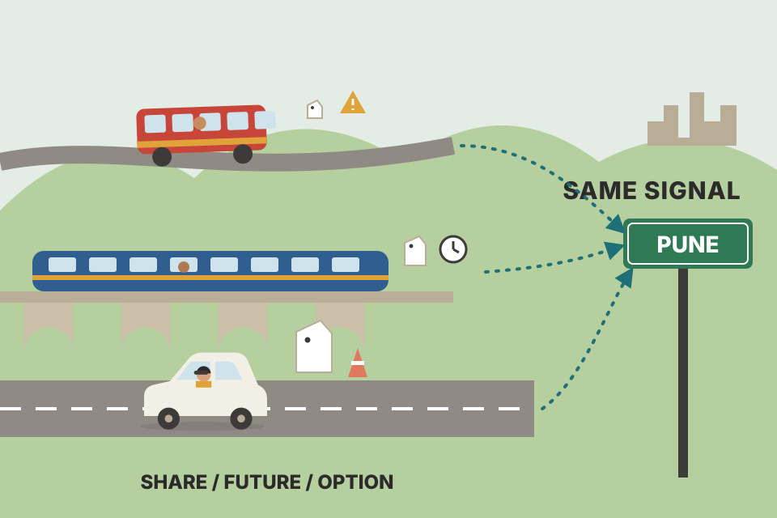
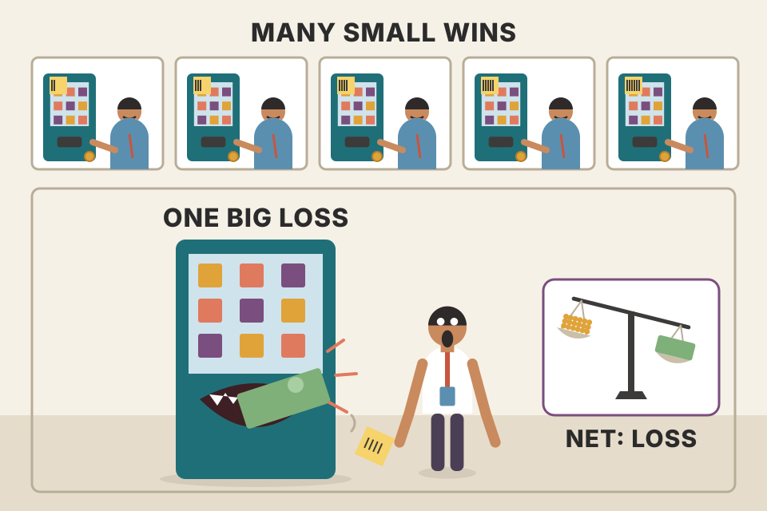
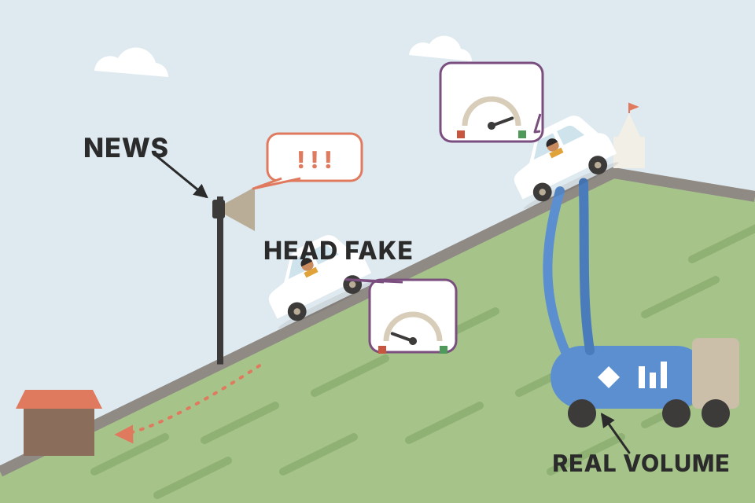
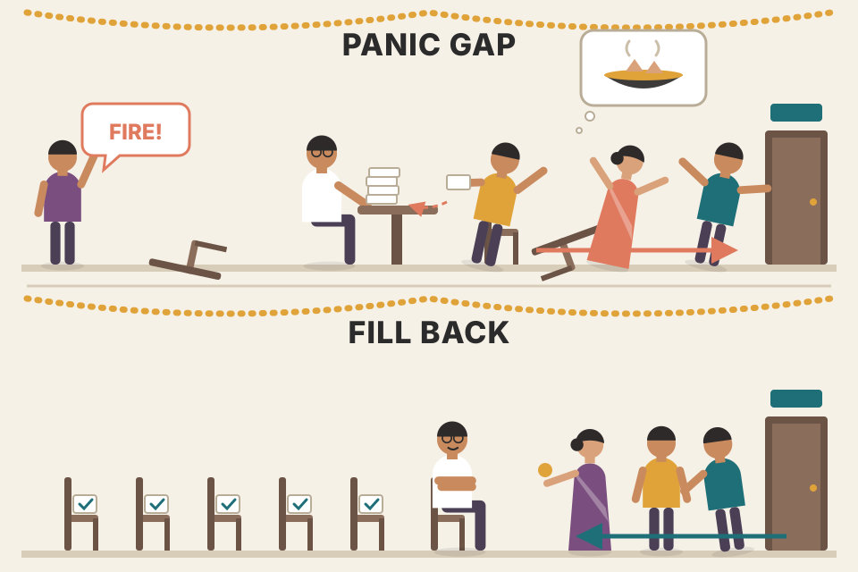

Carter's first setup of the day: when an index future opens away from yesterday's close, bet that it comes back to that close before the bell. This page walks the whole chapter in the book's order: why a setup needs rules around it, what a gap is, how premarket volume and the day of the week filter it, the ten trading rules, who loses money on the other side, every worked trade, unfilled "black hole" gaps, part-time trading and position size. Every chart uses simulated prices. Where a chart recreates one of Carter's trades, the levels (close, open, stop, target) are his and the bar-by-bar path is simulated.
The chapter has two halves. The first half (Part II's opener) is about the frame around any setup. The second half builds one setup completely, from definition to filters to rules to evidence to sizing.
Part II of the book asks one question: which intraday and swing setups work best for futures, stocks, options, forex and crypto? It opens with two epigraphs. A Chinese proverb, "Be not afraid of going slowly; be afraid only of standing still." And a verse from Omar Khayyám's Rubaiyat about taking the cash in hand rather than waiting on a promised paradise, which suits a chapter about taking a sure, small profit early in the day.
Carter's note on the 3rd edition, in plain words:

A signal is a direction, not a product. "Price should go up from here" can be bet on with a share, a future, a call or a put spread, the same way "I need to get to Pune" can be done by bus, train or car. The trip is the same; cost, risk and what happens if you're late are different.
Assumed numbers (not in the book): stock bought at 100; a 100-strike call bought for 3; a put credit spread that sells the 100 put and buys the 95 put for a credit of 2. Profit per share, ignoring costs.
Long stock earns or loses one-for-one with no limit. The call caps the loss at the premium paid but needs price to rise past 103 before it profits. The put credit spread profits as long as price simply doesn't fall much (it keeps the full credit of 2 anywhere above 100), but its gain is capped at 2 and its loss at 3. So an options trader picks the shape that matches how sure they are about direction, size of move and timing.
trading_equations.md has the Black–Scholes and expected-move formulas for pricing these legs.People constantly ask Carter for the one setup that works best all the time. There isn't one: different setups work in different market conditions. The other question he hears a lot, what the win ratio of a setup is, never comes from experienced traders; it always comes from beginners. His point: the win rate depends far more on the parameters you wrap around a setup (stop and target) than on the setup itself.
His example of a "99% setup": every time the NYSE $TICK reaches −1,000, buy one E-mini S&P (ES) contract with a 1-point target and a 100-point stop. It wins about 99 times in 100, and the one loss wipes out the whole string of wins. In contrast, he knows many traders who win only 50% of the time and make good money because their average winner is three times their average loser. Let winners run, cut losers short.

A vending machine that pays you ₹1 ninety-nine times in a row, then eats ₹100. You feel like a winner for weeks and you still lost money.
The number that decides whether you make money is the expectancy, the average result per trade: E = p·W − (1 − p)·L. Setting E = 0 gives the break-even win rate p* = L ÷ (W + L). For the $TICK example p* = 100 ÷ 101 = 99.01%, so a "99% setup" is actually a slight loser before costs. For 50% wins at 3:1, p* is only 25%, so a 50% win rate is a big edge. Win rate and payoff are two ends of one seesaw: a wider stop raises the win rate and lowers the payoff, and only the edge you actually have moves E.
trading_equations.md eq 1 (expectancy) with your own example: 51.5% wins at a 2R target gives 0.545R per trade before costs.backtest_results_summary.md: the break-even win rate p* = (L + c)/(W + L), with costs c added. Every losing run in your tests had a win rate below its p*.Before the first setup, Carter states what he calls an absolute truth: everyone trading for a living falls into one of three groups.
So every trading day needs a game plan, and every setup needs a foundation of three things: the methodology (do you scale in or go all in; scale out or go all out?), the money management (tight stop and bigger size, or wider stop and smaller size?) and knowledge of which market suits the setup (the mini-sized Dow, the euro, or a stock such as FB behave differently). Each market, setup and time frame is unique. Without these, traders may have fun for a few months or a year, but it won't last; they act fast when trying to make money and too slowly when protecting what they have.
How Part II is laid out:
One ES contract is worth $50 × the S&P 500 index. SPY trades at roughly one tenth of the index, so 500 shares are worth 500 × index ÷ 10 = $50 × index: the same exposure. An option's delta is how many dollars it moves per $1 move in the stock, per share. One call covers 100 shares, so 7 calls × 100 × 0.70 = 490 "share-equivalents", close to 500. Delta changes as price moves, so this match only holds for small moves.
An 80% win rate does not mean you lose exactly one trade in every five. Wins and losses arrive in random clumps, so over 100 trades you could see five losers in a row. That's why Carter tracks batches: how did this block of 25 trades do? The block of 100? If the blocks are profitable, you're on the way to a steady income.
The squares are one simulated run. The probabilities in the readout are exact, not simulated: a small dynamic program counts every possible sequence. At 80% wins over 100 trades, a run of 3+ losers happens in about 47% of runs, 4+ in about 12%, and 5+ in about 2.4%. So five in a row is possible but rare; three in a row is a coin flip. The batch line uses the binomial distribution. With wins of 1 and losses of 1.5 (the gap play's 1.5× stop), a 25-trade batch loses money only if fewer than 15 of its trades win. At 80% that's about 0.6% of batches; at 65% it's about 23%. Batches are how you tell a bad patch from a broken edge.
Carter's list of what traders do wrong after a result: skip the next setup after a stop (and it's the winner); after a stop, grab profits too early on the next one; double up after a win or a loss. The fix is to act like a machine and take the setups, not trade on how the last trade felt.
Toss a coin that lands heads 80% of the time. Over a hundred tosses, tails will sometimes come three in a row; that tells you nothing about the coin. Count heads per 25 tosses and the coin's bias shows up clearly.
Carter still finds gap plays the best way to start the day. They are the first trades of the stock session, and they tell you a lot about how the rest of the day will go, so he spends more time on this setup than on the others.
Gaps are contrarian or "fade" plays. The open stirs up excitement and emotion; he takes the other side. It's completely against the crowd and he rates it among the lowest-risk trades there are.
Definition. A gap is when today's regular cash-session open is above or below yesterday's regular cash-session close, leaving an empty space between the two price levels on the chart (he compares it to the gap in David Letterman's front teeth). You only see it on a chart built for the cash session. A 24-hour futures chart trades through the night and hides it.
Single-item vs multi-item markets. Gaps in "single-item" markets (bonds, currencies, grains, individual stocks) usually fill at some point, but not necessarily the same day, and Carter wants gaps likely to fill the same day. In a single-item market one news story drives the whole day's order flow, instead of touching a small part of an index.
A choir of 500 singers (an index) versus a soloist (one stock). One loud piece of news can push a soloist off-key for good. In a choir, some voices go sharp, others flat, others ignore it, and the overall note drifts back toward where it was.
An index is an average. When news is good for some components and bad for others, their moves partly cancel, so the index gap is mostly a burst of crowd emotion at the open rather than a lasting change in value. That's what can be faded. A single stock with real news has had its value repriced; there's nothing to fade.
Every gap is an open window that will close at some point; the job is to predict whether it closes today. The reason for the gap (earnings surprise, terror threat, takeover, economic report) doesn't matter. What matters is how the market responds to the news, and premarket volume shows that.
Volume in what? In a short list of heavily traded cash stocks, the big names of the day. In 2005 he watched KLAC, MXIM, NVLS and AMAT (active premarket, traded hard by individuals and funds). Now he uses AAPL, GOOGL, FB, BIDU, AMZN and NFLX, and expects the list to change over ten years, though AAPL and AMZN may stay. Their index weights differ, but together they show how seriously the market takes the day's news. Heavy volume: the news is being taken seriously. Light volume (more common): the market doesn't care or has already priced it in, and those are the days a same-day fill is very likely.
The reading. Check each stock's premarket volume at 9:20 a.m. eastern, ten minutes before the cash open. Premarket opens at 8:00, so that's 1 hour 20 minutes of trading. In "normal" conditions:
Scale for volatility. These numbers assume a "normal" $VIX of about 20. Writing in September 2011 with the $VIX near 40 (double), he had to double the volume levels, especially for AAPL. At 60, triple them; at 10, halve them.
Mixed readings. Often three stocks trade under 30,000 and one trades 95,000. First check that one stock for its own news. If it has news, throw it out. If not, take the average, call it a "moderate" gap, and play it that way: half off at 50% of the fill. On moderate gaps he does not move the original stop, even after taking half off.
| Stock | Premarket shares at 9:20 | Own news? |
|---|---|---|
| AAPL | ||
| GOOGL | ||
| FB | ||
| BIDU | ||
| AMZN | ||
| NFLX |
Try it: the default is Carter's mixed case, one stock at 95,000. Tick "own news" for BIDU and the day turns from moderate to low. Then move the $VIX to 40 and watch the thresholds double.

Carter's own image: a car going uphill on an empty tank versus a full tank. If the move is real, real volume pours into the cash market and carries the car over the hill. If it's a head fake, volume is thin, there's no conviction, and the car rolls back down to where it started. Ignore the news; follow the money.
Premarket volume measures how many shares actually changed hands at the new price. A gap on thin volume is a quote that moved without much money behind it, so when the full session opens and real liquidity arrives, price drifts back. A gap on heavy volume means large players already repositioned at the new price; that new level has buyers (or sellers) defending it. Scaling the thresholds by $VIX ÷ 20 is a volatility adjustment: in a more volatile market everyone trades more shares, so "heavy" has to mean more.
intraday_swing_playbook.md I-1 (ORB on stocks in play) wants high relative volume (RVOL > 2 from news, results, block deals) and a 1%+ gap, and trades with the opening move. That is exactly the high-volume, own-news case Carter says not to fade. Same opening bell, opposite filters, opposite trades.order_flow.md: volume and order flow as the "force" behind price; Carter's volume check is a crude, early version of that idea.Carter's team keeps raw gap data: how often a gap fills the same day, ignoring gap size and premarket volume. Sorted by weekday (Table 7.2):
Gaps on their own fill the same day most of the time; if a blackjack table paid these odds, Las Vegas would be out of business in three months, he jokes. But:
Default date: Monday, August 2, 2004, one of the book's own examples (section 12). August 1 was a Sunday, so that day was both a Monday and the first trading day of the month (my calendar check; the book doesn't point this out). Carter took the gap anyway and it filled: "usually passes" is a habit, not a hard rule. The checker treats every weekday as a trading day and ignores holidays.
These are base rates: how often the event happens with no filter at all. The unweighted average of the five weekdays is about 76% (my arithmetic). Premarket volume (section 06) and gap size (section 08) are filters on top. Monday's lower rate fits Carter's mechanism: a weekend lets real information pile up, so more Monday gaps are true repricings rather than opening emotion. The book doesn't give the sample size or years behind Table 7.2, so treat the differences between Tuesday and Friday (77–82%) as noise-sized.
The rules below are for a gap down on low premarket volume: buy it. A gap up is the mirror image: short it. On moderate volume, do exactly the same but take half off at 50% of the fill. On high volume, skip it. It's a fade play: buy gap downs, short gap ups.
Careful with Carter's wording. "1½:1 risk/reward" here means risk 1.5 to make 1: the stop is 1.5 × the gap and the target is 1 × the gap. Conventional "reward:risk" talk would call that 0.67:1. So the break-even win rate is 1.5 ÷ 2.5 = 60% on small gaps and 1 ÷ 2 = 50% on big gaps. The setup only pays because Carter claims a fill rate above 80% with these stops (section 11). Two details from his own examples: on Aug 24, 2004 the ES gap was exactly 4.00 points and he used 1:1; on Aug 4 the gap was 3.25, 1.5 × 3.25 = 4.875, and his stop sat 5.00 away. The planner copies both: gaps of 40 / 4 or more get 1:1, and the 1.5× distance is rounded up to the next tick (my inference about the 5.00, not stated in the book).
trading_equations.md eq 8 (fixed-fractional size): quantity = equity × risk% ÷ |entry − stop|. Carter instead fixes the contract count (section 13) and lets the dollar risk float with gap size.trading_equations.md warns that gaps jump over stops. The gap play turns that around: the gap is the entry, and the stop sits inside the day's session.Carter says a key step is knowing why you make money on a trade, which means knowing who is losing it. On a gap down, two groups get hurt:
Both are acting on strong emotion, and Carter wants to be on the other side: when they sell, he buys. The same two groups then push the rally: the first group buys back in a panic to recover the morning's losses, and the second group's protective stops turn into short covering (buying) as price rises.

A crowd rushes for the exit because someone shouted "fire". You calmly buy the seats they're leaving. When people realise there's no fire, the same crowd rushes back in, and the only seats left are yours.
Price moves when one side has to trade. At the open, forced sellers (stops, margin, fear) and new emotional shorts sell into whoever will buy. Once that selling is used up, there is a pool of short positions with stops placed above the early highs. As price lifts, those stops fire as market buy orders, and yesterday's longs who sold try to get back in. Forced buying on the way up mirrors forced selling on the way down, and it tends to run until the obvious level, yesterday's close. The dashed "shorts' stops" line on the chart is my illustration of where that cluster tends to sit; the book doesn't give a level.
order_flow.md (market orders, absorption, stops as liquidity).The book's charts are 5-minute YM charts with numbered points; list item "2" describes point 2 on the chart, and so on. Below, the levels and timing come from the book; the bars are simulated so you can replay the day. One YM point is worth $5.
| Trade | Prev close | Open | Gap | Side | Stop (distance) | Result / contract | Time to fill |
|---|---|---|---|---|---|---|---|
| Oct 15, 2003 YM (Dec '03) | 9717 | 9762 | +45 | short | 9807 (45, 1:1) | +$225 | 35 min · "Bahamas gap" |
| Oct 16, 2003 YM (Dec '03) | 9704 | 9645 | −59 | long | 9586 (59, 1:1) | +$295 | about midday on Fig 7.3 · "Somalia gap" |
A Bahamas gap is a flight that lands on time. A Somalia gap is the same destination with turbulence all the way; you still land, as long as you don't open the emergency exit at the first bump.
A breakeven stop sits exactly where the trade started, which is also where the morning's emotional selling ran out. Price often comes back to test that level before the real move, so a breakeven stop is placed right where a normal retest will hit it. Carter's stop sits 59 points away, outside the normal noise of the day, so a retest costs nothing.
Carter's view: one of the best signs of an amateur is using only tight stops, or a 3:1 reward-to-risk (risk 1 point to make 3) on every trade. Brokers teach beginners this, and while the traders wonder why they get stopped out just before the turn, the broker counts commissions. In general wider stops produce more winning trades. The catch: only use wide stops on setups with a better than 80% chance of winning. He says the gap play with his parameters wins more than 80% of the time; with a tight stop the odds drop to under 30%. Stops that are too tight are one reason traders fail: if nearly every trade is stopped out, you can't make money.
He adds that an active trailing-stop programme hurts the win rate on gap plays. Once the orders are in, walk away. Tweaking is fine for a car tune-up; tweaking a gap trade doesn't work.
| Stop rule (long a gap down; gap = 1) | Win % | Stopped % | Out at bell % | Avg result (× gap) | Break-even win % |
|---|
The model (mine, not Carter's): price starts at the open, 0, and yesterday's close is +1. Each 5-minute bar it is pulled toward +1 by the "pull" setting and shaken by random noise, for 81 bars (9:30–4:15). 2,000 mornings are generated and every stop rule is run on the same mornings. Set the pull to 0 and the market has no edge: the 1.5× stop still wins close to 60% and the tight stop under 30% (a pure random walk with no closing bell gives exactly 1.5 ÷ 2.5 = 60% and ⅓ ÷ 1⅓ = 25%), yet every rule averages about zero. At the default pull (fill rate about 85%), the 1.5× stop wins close to 80%, roughly the shape Carter describes. That's the seesaw from section 02. Win rate comes from stop width; profit comes only from a real pull toward the fill. With a pull, the wide stop lets that edge play out, the tight stop gets shaken out by ordinary noise first, and the breakeven trailer gives back many of the trades that dip to the entry before filling. The fill rate here is whatever the pull setting produces. It is an input to the model, not evidence that Carter's 80% is true.
trading_equations.md eq 16 (Ornstein–Uhlenbeck): the pull is an OU-style spring toward yesterday's close; its half-life is ln 2 ÷ pull, in bars. price_physics_basics.md calls this the "spring" in price.backtest_results_summary.md: none of your intraday tests passed, and the summary lists no gap-fade test. Testing whether the Nifty or Bank Nifty futures have a real pull toward the previous close would answer this section with your own data.Most traders get caught up in why there's a gap. Carter says the reason is meaningless: gaps happen because a burst of emotion hits the tape at the bell, and the reason says little about whether the gap fills. One ES point is worth $50.
Figures 7.4, 7.5 and 7.8 are blank in this PDF copy, so for Aug 2 and Jul 14 the timing below follows the text only (a fill later that day; a fill in a little under an hour); the path is illustrative.
| Trade | Prev close | Open | Gap | Side | Stop (distance) | Result / contract | Time to fill |
|---|---|---|---|---|---|---|---|
| Aug 2, 2004 YM (Sep '04), Monday and 1st trading day of August | 10,142 | 10,091 | −51 | long | 10,040 (51, 1:1) | +$255 | later that day |
| Aug 24, 2004 ES (Sep '04) | 1097.00 | 1101.00 | +4.00 | short | 1105.00 (4.00, 1:1) | +$200 | a little over an hour |
| Aug 4, 2004 ES (Sep '04) | 1097.50 | 1094.25 | −3.25 | long | 1089.25 (5.00, ≈1.5×) | +$162.50 | a little over an hour |
| Jul 14, 2004 ES (Sep '04) | 1114.75 | 1109.00 | −5.75 | long | 1103.25 (5.75, 1:1) | +$287.50 | a little under an hour · Bahamas |
Check every result yourself: result per contract = gap in points × dollars per point, because the target is exactly the gap. All six examples add up: 45×5, 59×5, 51×5, 4×50, 3.25×50, 5.75×50. Notice what's missing: no example shows a loss. Carter says up front that he picked winning examples to show exit management. That makes them illustrations of the mechanics, not evidence of the win rate.
If 80% of gap plays win, 20% lose. Carter likes those losers for one reason: they leave an open gap, which he compares to a black hole or tractor beam that eventually sucks price back to it. He writes every open gap on a Post-it note on his screen and marks it on his chart. Markets usually take them out within 5 to 10 trading days.
Sizing for the example: a $100,000 account trading nine contracts as a full position, about one contract per $11,100. Brokers will happily let you trade far more; some allow 100 contracts on $100,000. He calls that insane. A trader using a modest 2-point stop on the S&P could be stopped out four times in a row: 2 points × $50 × 100 contracts = $10,000 per stop, $40,000 for four. Being allowed to doesn't make it wise; it's a choice, like one glass of wine or the whole bottle.
Figure 7.9 is blank in this PDF copy. The chart below draws the week from the text: Carter's levels where he gives them, and assumed closes (marked) where he doesn't. The year isn't stated in the chapter.
| Day | What happened (book) | Per contract | Position | Running total |
|---|
Read the week as a ledger. One full-size loss (−$1,980) was recovered by the next day's small fill and then buried by the next three. The losing day also created the Aug 22 bonus trade: a bear-flag breakdown aimed at the open gap, entry 9392, stop 9455 (63 points of risk), target 9304 (88 points), about 1.4 to 1. Two arithmetic notes on the book's numbers. The Aug 21 trade says "$255 per contract on four contracts", but 44 points × $5 = $220, and the book's own line 4 × 44 × $5 = $880 uses $220. Also, Aug 21 was a moderate-volume day traded with all nine contracts (5 + 4), while Table 7.1 says ⅔ size on moderate days. The table follows the book's dollar figures.
trading_equations.md eq 8 and your playbook's 0.25–0.5% risk per intraday trade. Carter's nine contracts with a 1.5× stop on a 64-point YM gap risks about $4,320, about 4.3% of $100,000 (section 15), far more per trade than your own rule.Gaps suit people with full-time jobs. On the US West Coast it's especially easy because the market opens (6:30 a.m. Pacific) well before work. What you need:
The biggest advantage of trading it part-time: you won't make the full-timer's mistakes while watching. They get antsy and fidgety and bail out too soon. Someone at the office with no time to watch has an edge over traders who haven't learned to control their emotions.
After entry you have two exit orders resting at once: a limit at the target and a stop at the stop level. Only one should ever fill. If they aren't linked, the second one stays live after the first fills. Later in the day price can wander through it and quietly open a new position you never meant to hold. "One-cancels-other" linking fixes that; that's the feature Carter is asking for.
how_to_sell_stocks.md covers NSE order types (stop-loss, GTT).The same gap can be traded five ways: mini-sized Dow futures, E-mini S&P futures, SPY and DIA shares, and futures on the DIA that traded on OneChicago. Table 7.3 shows how many of each Carter would trade on a $100,000 account for a gap on July 24 (year not stated). DIA futures suit smaller accounts: a middle ground between the heavy leverage of the mini futures and no leverage in the DIA and SPY shares.
| Instrument | Quantity | $ per point (per unit) | Profit = qty × gap × $/pt | Book's profit | Stop ÷ gap | Risk to stop | Exposure at open |
|---|
All five positions bet on the same fill, with very different leverage. The two futures positions control about $415,000–$447,000 of index exposure on a $100,000 account (4.2–4.5×), the DIA futures about $185,000 (1.9×), the shares about $46,000–$50,000 (under 1×). Profit scales with that exposure. Two things in Table 7.3 don't match the rules or the arithmetic, and I've left them visible. Every stop in the table is 1.5 × the gap, though the 64-point YM gap and the 6.50-point ES gap are over 40 / 4 and rule 5 would give 1:1. And the mini Dow profit is printed as $2,700, while 9 × 64 × $5 = $2,880. The other four rows check out exactly. The DIA futures' $100 per point is implied by the table (20 × 0.62 × $100 = $1,240), not stated.
The open is the one moment of the day when every player has to show their poker hand, and that is the short-term trader's biggest advantage. Knowing the psychology behind gaps is essential to playing them every day; many traders make a good living from gaps alone. The key is knowing how they work and having solid rules.
One more point: the 50% retracement of the gap. Earlier he said he takes half off at 50% on moderate-volume days. In fact the 50% level is the highest-probability exit on any gap, and it's fine to change your plan to take half off at 50% on every gap, low or moderate volume.
With this, the serious trader has a base for a full-time plan: a proven setup, the markets that suit it, and a plan to get the most out of it. That's about all a trader needs to survive and do well in what he calls the greatest of professions.
Defaults are Carter's moderate-volume numbers: 85% to the midpoint, 60% to the full fill. Expected value in units of the gap, with the stop kept where it was (he doesn't trail it).
Splitting the exit trades upside for certainty. The first half needs only the 50% move, which happens more often than the full fill, so more trades end with some profit. When the full-fill odds are much lower than the midpoint odds (moderate volume), the split usually raises the expected value as well; when the two are close (low volume), it lowers the average a little but smooths the ride. These are expected values from the book's probabilities plus my worst-case or best-case assumption about what happens otherwise, not results.
No. Break-even win rate = 100 ÷ (1 + 100) = 99.01%, so at 99% the expectancy is slightly negative before costs: 0.99 × 1 − 0.01 × 100 = −0.01 points a trade. Carter's point is that win rate depends on the stop and target you choose, not on the setup (section 02).
Today's regular cash-session open versus yesterday's regular cash-session close. Futures trade overnight, so a 24-hour chart connects the two sessions with overnight bars and the jump disappears. He builds a 9:30–4:15 eastern chart to see it (sections 03, 06).
An index mixes stocks that react differently to the same news, so moves partly cancel and the gap tends to fill the same day; a stock with its own news may never fill (Enron, WorldCom). A stock is OK if it gaps by about the same percentage as the market with no news of its own (section 03).
At $VIX 20, 50,000 is moderate: about 60% full-fill odds but 85% to the midpoint, so ⅔ size (Table 7.1), half off at 50% of the gap, half at the fill, original stop not moved. At $VIX 40 the thresholds double (60,000 / 140,000), so 50,000 counts as low: full size, target the fill (section 04).
Monday, 65%: most breakaway gaps happen on Mondays because news builds up over the weekend. He also skips expiration day (third Friday) and the first trading day of the month, about 55–60%, unless premarket volume is very low (section 05).
A 3.25-point gap down, over the 1-point minimum, under 4 points, so the 1½:1 rule applies. Buy at the open. The stop goes 1.5 × 3.25 = 4.875 below, which his example shows as 5.00 → 1089.25. Target 1097.50, worth 3.25 × $50 = $162.50 per contract. Break-even win rate 5 ÷ 8.25 ≈ 61% (sections 06, 08).
Risk 1.5 units (the stop) to make 1 unit (the gap). It breaks even at 1.5 ÷ 2.5 = 60% wins, so it only works because the claimed fill rate is above 80% (sections 06, 08).
They had trailed their stops to breakeven. Price came back to the entry, as it often does before a fill, and hit them. Carter doesn't trail on this setup (rule 7); his stop was 59 points away, and the gap filled later for +$295 per contract (section 08).
Yesterday's longs, who are stopped out or panic-sell, and flat traders who short in fear. Later the first group buys back in a panic to recover losses and the second group's stops trigger short covering. Both are buying that pushes price toward the fill (section 07).
Bahamas: fills quickly and smoothly with few false moves (Oct 15, 2003; Jul 14, 2004). Somalia: takes hours and is stressful to watch, with retests of the entry, but still fills if you keep your parameters (Oct 16, 2003) (section 08).
He writes it down and marks it; they usually fill within 5–10 trading days. After the Aug 18 loss left a gap at 9304, on Aug 22 he sold a bear-flag break at 9392 with a stop at 9455 and a target of 9304: +88 points, $440 per contract, $3,960 on nine contracts (section 09).
A 2-point ES stop costs 2 × $50 × 100 = $10,000; four stops in a row cost $40,000, 40% of the account. He uses nine contracts per $100,000, about one per $11,100 (section 09).
Not at all for three: it happens in about 47% of 100-trade runs. Five in a row is rare, about 2.4%, but possible, which is Carter's point. Judge batches of 25 or 100 instead (section 02, exact probabilities beyond the book).
A high win rate can come from stop placement alone. Expectancy stays near zero without a real edge. To trust the gap play you'd have to measure the actual fill tendency in your own market, e.g. Nifty futures, net of costs (section 11; the simulation is beyond the book).